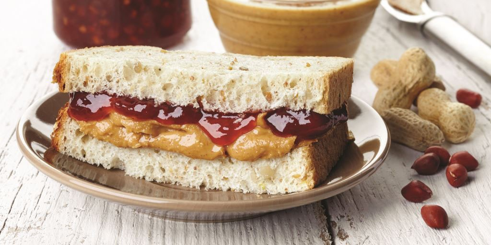

Peanut Butter & Jelly Sandwich

The classic PB&J sandwich, made with peanut butter, choice of bread, and grape jelly.
Ingredients
- Peanut Butter
- Jelly
- Bread
Steps
- Place 2 slices of bread on plate.
- Spread peanut butter over one of your slices of bread.
- Spread jelly over the remaining slice of bread.
- Press the slices of bread together so that the peanut butter and jelly meet.
Back to Recipes